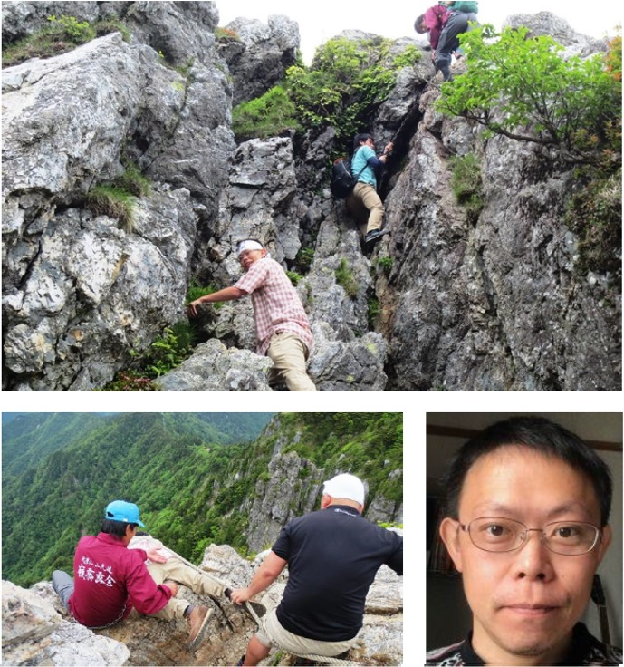

自己紹介

基本情報
- 名前: 中垣保孝 (なかがきやすたか)
- あだ名: がっきー
- 学歴: システム工学修士/MBA/MPD
- 出身地: 和歌山市
- 住所: 八王子市
- 家族: 5人家族
- 所属企業: 精密機器メーカー
- 個人事業主: Kando Inspire Factory
- WEB Page: メインページ / テストページ
- 通勤時間: 片道1時間
- 誕生日: 2月3日
- 血液型: A型
- 趣味: 旅行、自己啓発
- 専門: 新規事業
経歴
精密機械メーカーに入社後、要素開発に従事。その後、新規事業開発関連の業務に携わりながら、要素研究開発、マーケティング、商品企画、営業、技術開発、品質保証、企画G、モノづくり企業の製品化プロセスに関する部門を一通り経験し、現在に至る。